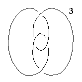
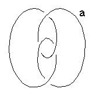

197
197
 199
199 Orbifold Atlas Home Page
Orbifold Atlas Home Page
 Crystallographic Topology Home Page
Crystallographic Topology Home Page
Underlying Topological Space: S3; Figure Pseudo-Symmetry (FPS): 222
Euclidean 3-Orbifold with Invariant-Lattice-Complex Letters
(left), Wyckoff Site Letters (right)
 
| FPS | Mult | Lattice Comp | Group Graph | Wyckoff Set | 2[4]Cover |
| 4-1 | [F,+Y,F,-Y,F,+Y,F,-Y]& | <3>& | (a:)1 | ||
| 4-4 | F | 33 | a4&a1, a1&a2, a2&a3, a3&a4 | ||
| 4-2 | F[+Y]F | 3<3>3 | a1, a3 | ||
| 4-2 | F[-Y]F | 3<3>3 | a2, a4 | ||
| 12 | 1 | b:a | |||
| 2 | 12-1 | [+V,S,-V,`S]& | 2*=<1>& | (b1:)2 | |
| 2 | 12-1 | +Y3[+V]+Y3 | 2*=33<1>33 | b2:a1-a3 | #212(d) |
| 2 | 12-1 | +Y3[-V]+Y3 | 2*=33<1>33 | b3:a1-a3 | #212(d) |
| 12-1 | -Y3[-V]-Y3 | 2*=33<1>33 | b4:a2-a4 | #213(d) | |
| 12-1 | -Y3[+V]-Y3 | 2*=33<1>33 | b5:a2-a4 | #213(d) |
Lattice Points: (1) 0,0,0 + (1/8,1/8,1/8) x8 &; (2) 1/8,0,1/4 + (1/4,0,0) x4 &
197
199
Orbifold Atlas Home Page
Crystallographic Topology Home Page
Page last revised: